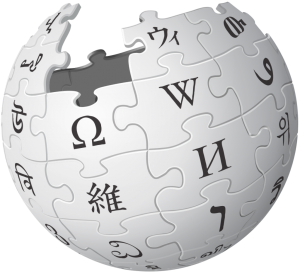

The nonprofit Wikimedia Foundation provides the essential infrastructure for free knowledge. We host Wikipedia, the free online encyclopedia, created, edited, and verified by volunteers around the world, as well as many other vital community projects. All of which is made possible thanks to donations from individuals like you. We welcome anyone who shares our vision to join us in collecting and sharing knowledge that fully represents human diversity.
Protect and sustain Wikipedia
You made it. It is yours to use. For free. That means you can use it, adapt it, or share what you find on Wikimedia sites. Just do not write your own bio, or copy/paste it into your homework.
We do not sell your email address or any of your personal information to third parties. More information about our privacy practices are available at the Wikimedia Foundation privacy policy, donor privacy policy, and data retention guidelines.
Readers verify the facts. Articles are collaboratively created and edited by a community of volunteers using reliable sources, so no single person or company owns a Wikipedia article. The Wikimedia Foundation does not write or edit, but you and everyone you know can help.
The word “wiki” refers to a website built using collaborative editing software. Projects with no past or existing affiliation with Wikipedia or the Wikimedia Foundation, such as Wikileaks and wikiHow, also use the term. Although these sites also use “wiki” in their name, they have nothing to do with Wikimedia.



The Wikimedia Foundation is launching the inaugural Open the Knowledge Journalism Awards. Coinciding with the 30th anniversary of World Press Freedom Day, this year’s awards celebrate the contributions of journalists in Africa who prioritize diversity, equity and inclusion in their reporting.
3 May 2023
By Wikimedia Foundation

The Wikimedia Foundation is launching the inaugural Open the Knowledge Journalism Awards. Coinciding with the 30th anniversary of World Press Freedom Day, this year’s awards celebrate the contributions of journalists in Africa who prioritize diversity, equity and inclusion in their reporting.
3 May 2023
By Wikimedia Foundation
Editor since 2007, Wikimedia community
Editor since 2003, Wikimedia community
Editor since 2007, Wikimedia community
Questions about the Wikimedia Foundation or our projects? Get in touch with our team.
Contact
The Wikimedia Foundation, Inc is a nonprofit charitable organization dedicated to encouraging the growth, development and distribution of free, multilingual content, and to providing the full content of these wiki-based projects to the public free of charge.